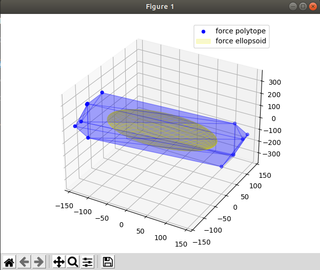

Pinocchio examples

Installing Pinocchio
Pinocchio library can be downloaded as sa pip package however due to the large number of different dependencies we suggest you to use anaconda.
Pip package install
pip install pin
Anaconda install
For anaconda instals you can simply download the yaml file and save it as env.yaml:
name: pio_examples
channels:
- defaults
- conda-forge
dependencies:
- python=3.8
- conda-forge::pinocchio
- conda-forge::gepetto-viewer
- conda-forge::gepetto-viewer-corba
- conda-forge::example-robot-data
- pip
- pip:
- pycapacity
And create a new ready to go environment:
conda env create -f env.yaml # create the new environemnt and install pinocchio, gepetto, pycapacity,..
conda actiavte pio_examples
Creating the custom environment from scratch
You can also simply use anaconda to create a new custom environment:
conda create -n pio_examples python=3.8 pip # create python 3.8 based environment
conda activate pio_examples
Install all the needed packages
conda install -c conda-forge pinocchio
conda install -c conda-forge example-robot-data
conda install -c conda-forge gepetto-viewer
Then install pycapacity for the workspace analysis
pip install pycapacity
Code example
Calculating the force polytope and ellipsoid of the panda robot and visualising it using matplotlib.
import pinocchio as pin
import numpy as np
from example_robot_data import loadPanda
robot = loadPanda()
# Display a robot configuration.
# q0 = pin.neutral(robot.model)
q0 = robot.q0
# calculate the jacobian
data = robot.model.createData()
pin.framesForwardKinematics(robot.model,data,q0)
pin.computeJointJacobians(robot.model,data, q0)
J = pin.getFrameJacobian(robot.model, data, robot.model.getFrameId(robot.model.frames[-1].name), pin.LOCAL_WORLD_ALIGNED)
# use only position jacobian
J = J[:3,:]
# polytope python module
import pycapacity.robot as pycap
# get max torque
t_max = robot.model.effortLimit
t_min = -t_max
# calculate force polytope
vertices, faces_index = pycap.force_polytope_withfaces(J, t_max, t_min)
faces = pycap.face_index_to_vertex(vertices,faces_index)
# calculate force ellipsoid
radii, rot_mat = pycap.force_ellipsoid(J, t_max)
# plotting the polytope
import matplotlib.pyplot as plt
import pycapacity.visual as pcvis # pycapacity visualisation tools
fig = plt.figure()
# draw faces and vertices
ax = pcvis.plot_polytope_vertex(plt=plt, vertex=vertices, label='force polytope',color='blue')
pcvis.plot_polytope_faces(ax=ax, faces=faces, face_color='blue', edge_color='blue', alpha=0.2)
# draw the ellipsoid
pcvis.plot_ellipsoid(radii=radii, rotation=rot_mat,ax=ax,color='yellow', edge_color='yellow', alpha=0.2, label="force ellopsoid")
plt.tight_layout()
plt.legend()
plt.show()
